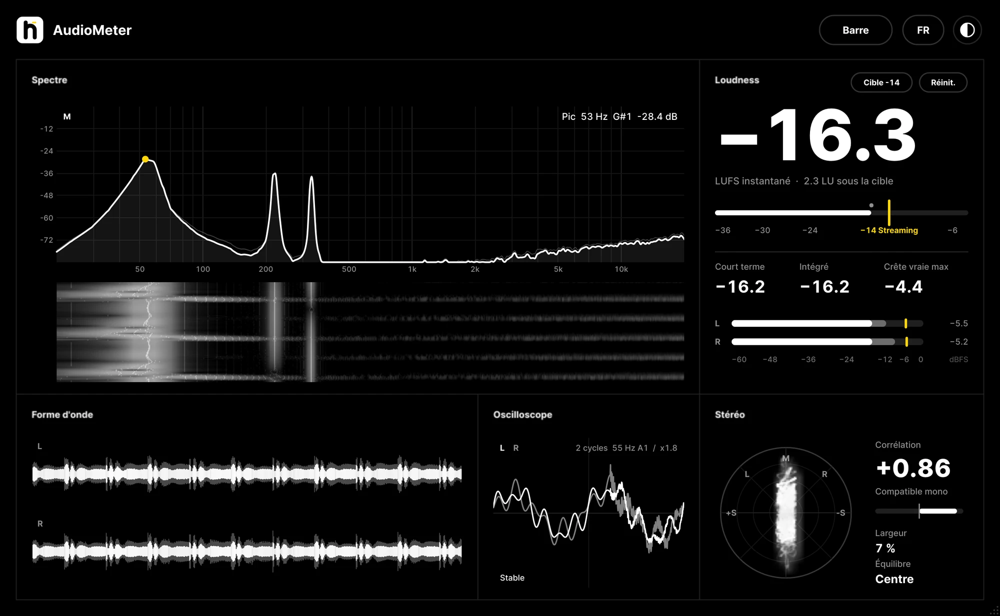
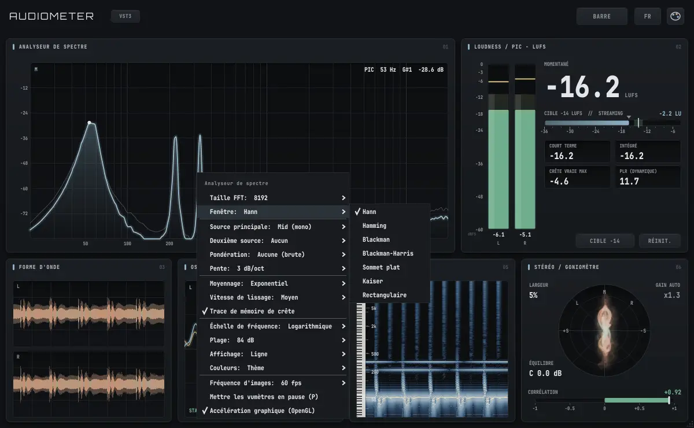
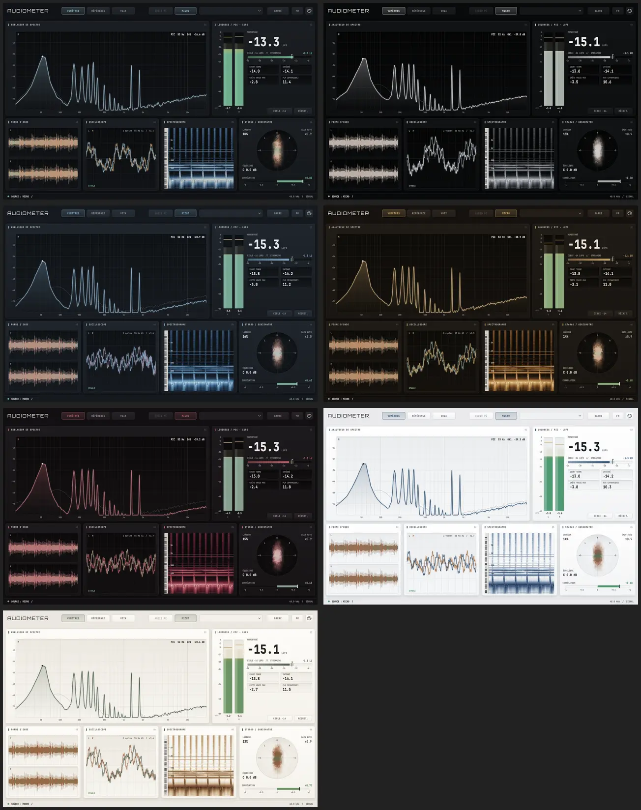

Tes mesures, toujours au-dessus de ton DAW.
Spectre, LUFS, true peak, stéréo, oscilloscope et spectrogramme dans un seul plugin, plus une barre fine qui reste en haut de l'écran pendant que tu mixes.

Une barre qui ne disparaît jamais derrière tes fenêtres.
Un clic sur HOTBAR et les mesures se collent en haut de l'écran, sur toute la largeur, comme la barre des tâches. Les fenêtres agrandies s'arrêtent juste en dessous, rien ne la recouvre quand tu changes de logiciel, et elle s'efface devant une vidéo en plein écran.
Tu choisis ce qu'elle affiche : vumètres, spectre, spectrogramme, oscilloscope, goniomètre, corrélation, LUFS. Le survol du spectre donne la fréquence, le niveau et la note.
Tout ce qu'il faut pour vérifier un mix.
Analyseur de spectre
FFT jusqu'à 16384 points, sources L / R / Mid / Side, pondération A, maintien des crêtes, échelle log, linéaire ou ERB, courbe ou barres.
Loudness & true peak
LUFS momentary, short-term et integrated (ITU-R BS.1770), true peak suréchantillonné x4, PLR, cibles streaming, club, podcast, broadcast.
Forme d'onde
Historique défilant coloré par bande de fréquences (graves, médiums, aigus), pistes L, R, Mid ou Side, écrêtage en rouge.
Oscilloscope stable
Le déclenchement suit la hauteur de la note : la forme d'onde reste immobile, avec la fréquence et la note affichées.
Spectrogramme net
Mode net par réassignation en fréquence, clavier de piano, zoom en fréquence, réticule avec note et temps.
Stéréo & corrélation
Goniomètre Lissajous ou nuage de points par bande, corrélation sur 1 ou 3 bandes, largeur, balance.
Tout se règle au clic droit.
- Chaque module a son menu : taille de FFT, fenêtre, sources, échelles, couleurs…
- Réglages mémorisés et partagés entre toutes les instances du plugin.
- 30, 60 ou 120 images/s, pause avec la touche P.
- Transparent : le son ressort exactement comme il est entré.

Sept thèmes sobres, six langues.
Graphite, Carbone, Ardoise, Noyer, Bordeaux, Studio et Papier : des fonds neutres et une seule couleur d'accent, pour lire les mesures sans fatigue.

Un prix, sans abonnement.
- Plugin VST3 pour Windows 10 / 11 (64 bits)
- Activation sur 2 ordinateurs, transférable
- Fonctionne hors ligne après l'activation
- Mises à jour de la version 1 incluses
- Clé de licence envoyée par e-mail tout de suite
Paiement sécurisé par Polar (carte, PayPal selon les pays). TVA incluse selon ton pays, facture envoyée par e-mail.
Questions fréquentes
Comment fonctionne l'activation ?
Après l'achat, tu reçois une clé de licence par e-mail. Ouvre AudioMeter dans ton DAW : la fenêtre de licence s'affiche (sinon clique sur le bouton ESSAI à côté du logo), colle la clé et clique sur ACTIVER. Une connexion internet est nécessaire une seule fois.
Sur combien d'ordinateurs ?
Deux ordinateurs en même temps. Pour changer de PC, clique sur le logo AUDIOMETER du plugin puis sur « Désactiver ce PC » : la place se libère et tu peux activer la clé ailleurs.
Faut-il être connecté à internet ?
Seulement pour l'activation. Ensuite le plugin vérifie la licence de temps en temps quand internet est disponible, et continue de fonctionner hors ligne pendant plusieurs semaines.
Dans quels logiciels ?
Tous les logiciels compatibles VST3 sur Windows : FL Studio, Ableton Live, Reaper, Cubase, Studio One, Bitwig… Place-le sur une piste ou sur le master.
Et sur Mac ?
Pas encore : la version actuelle est pour Windows. Essaie la version d'essai avant d'acheter pour vérifier qu'elle te convient.
Est-ce que le plugin modifie le son ?
Non. AudioMeter mesure le signal et le laisse passer tel quel.
Remboursement ?
Profite de l'essai gratuit de 14 jours pour tout tester avant d'acheter. En cas de problème technique, écris-nous à l'adresse ci-dessous.
Windows affiche « Windows a protégé votre ordinateur »
C'est normal pour un petit éditeur indépendant : l'installateur n'a pas encore de signature payante. Clique sur « Informations complémentaires » puis « Exécuter quand même ». L'installateur place simplement le plugin dans le dossier VST3 de Windows.